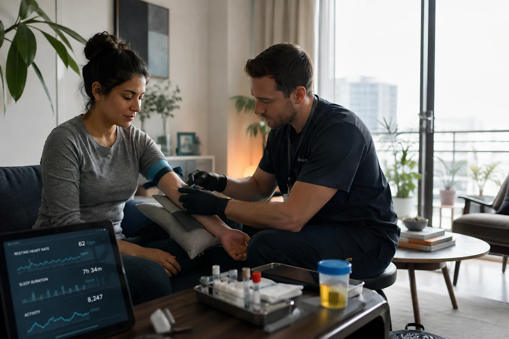

The Waiting Room Is Moving Into the Home
More primary care is shifting toward continuous monitoring, home diagnostics and AI-assisted triage. Patients are seeing doctors less often in person — but being watched more closely between visits.

When Rosa Alvarez had her annual physical last month, she never sat in a waiting room.
A mobile technician came to her apartment before work, drew blood, collected a urine sample and checked her blood pressure. Her home cuff had already sent three months of readings to her clinic. Her watch contributed resting heart rate, sleep duration and activity trends.
Two days later, Alvarez spoke with her physician for nineteen minutes from her kitchen table.
“She already knew what she wanted to talk about,” Alvarez said. “I didn’t spend half the appointment trying to remember what happened six months ago.”
For a growing number of patients, that is what routine medicine looks like now.
The traditional annual visit has not disappeared. Clinics still examine patients in person, listen to lungs, palpate abdomens and order tests that cannot be done through a phone. But more of the work surrounding those visits has moved into the home.
Blood pressure cuffs transmit readings automatically. Compact ECG devices can record a rhythm strip during symptoms. Home sleep sensors collect nights of data instead of one night in a laboratory. Some pharmacies and mobile services now perform basic blood draws at a patient's home or workplace.
Taken together, the devices are changing what doctors see. A single office measurement is increasingly being read alongside weeks or months of information collected elsewhere.
The problem with the perfect office reading
Physicians have always known that a measurement taken in a clinic may not represent ordinary life.
Blood pressure is the classic example. Some patients become anxious during appointments and produce readings higher than their usual levels. Others appear normal in the office but run high during the rest of the week.
A few readings at home can help. Ninety days of readings can show something else entirely.
Dr. Hannah Pike, an internist in Denver, said she now spends less time asking patients what they think their blood pressure has been and more time looking at the pattern.
“You can see weekends,” Pike said. “You can see the week they were sick. You can see that every Tuesday is bad because Tuesday is apparently when their company has its staff meeting.”
That much data can reveal useful patterns, but it also gives physicians another task: deciding which patterns matter.
The machine that asks the first question
AI-assisted triage systems have become common at large medical groups, particularly for routine messages and same-day complaints.
A patient reporting dizziness may be asked about duration, medication changes, chest pain, recent illness and whether symptoms worsen when standing. The system can sort those answers before a nurse reviews them and flag combinations that require immediate attention.
Clinics say the tools help manage enormous message volumes and move urgent cases higher in the queue.
Patients tend to describe the experience differently.
“It feels like filling out the smartest form you’ve ever seen,” said Marcus Bell, 41, who recently used his health system's triage service for persistent abdominal pain. “The weird part is that it remembered what I said three questions ago.”
Bell eventually spoke with a nurse and was seen in person the same afternoon.
Most health systems are careful to describe these systems as decision support rather than independent diagnosis. A clinician remains responsible for the medical decision.
From the patient's side, the boundary is less obvious. The software may ask the questions, summarize the answers and suggest the next step before a nurse or physician joins the exchange.
More care without more appointments
Convenience is only part of the appeal. Health systems are also using home monitoring to stretch limited clinical capacity.
Primary-care practices are managing older populations and more chronic disease without a matching increase in physicians and nurses. Remote monitoring allows a clinic to keep track of some patients without scheduling an in-person appointment every time a number changes.
A patient with hypertension may upload readings automatically and hear nothing when they remain stable. A sustained change can trigger a review. Someone recovering from surgery may answer a daily symptom check while temperature, pulse and activity data are collected in the background.
The work remains, but it is distributed differently through the week.
Instead of seeing every patient on a fixed schedule, clinicians spend more time responding to exceptions.
Hospitals are using similar systems to discharge selected patients earlier while continuing to monitor them at home. Mobile nurses, portable diagnostics and remote physician visits can extend the hospital beyond the building for patients who are stable enough to leave but still need close follow-up.
When every number becomes a symptom
Continuous monitoring also creates a problem medicine did not have at the same scale before: healthy people can now watch themselves fluctuate in real time.
Heart rate rises after poor sleep. Oxygen readings drift. A wearable reports an unusual rhythm that never happens again. A glucose sensor shows a spike after lunch in someone who has never been diagnosed with diabetes.
Normal bodies produce a surprising amount of variation.
More measurement means more opportunities to find something abnormal, including abnormalities that never become disease.
Pike said one of the newer parts of her job is explaining why a strange number does not always require action.
“People assume that because we can measure something continuously, the ideal value must also be continuous,” she said. “Bodies don’t work that way.”
Some clinics have started limiting the consumer-device data they accept for exactly that reason. A physician may want a patient's blood-pressure trend while declining access to every sleep-stage estimate, stress score and recovery metric produced by a watch.
Who gets to see the stream?
The privacy question becomes more complicated when health information is collected outside a hospital or doctor's office.
Data generated by a medical device prescribed through a clinic typically enters a tightly regulated health system. Consumer devices can follow different rules depending on who operates the service and how the information is shared.
Patients do not always know where that boundary sits.
A sleep score may begin as a wellness feature and later become part of a clinical discussion. A wearable purchased by an employer may collect information that resembles medical data without being treated the same way as a hospital record.
Insurers are also interested in remote monitoring, particularly when it can prevent expensive hospitalizations or show that a patient is responding to treatment.
That creates an obvious tension. Patients may want their insurer to pay for the equipment without wanting the insurer to know every number the equipment produces.
The house call returns, differently
Home-based care can look futuristic until someone arrives carrying a black medical bag.
Mobile phlebotomists, nurses and technicians are becoming the physical layer beneath remote medicine. They draw blood, collect samples, perform basic imaging, inspect wounds and bring equipment that cannot be mailed in a box.
The arrangement has begun to resemble an older form of medicine, even though the systems behind it are new.
The physician may be somewhere else, the diagnostic equipment is smaller and the patient's devices have been collecting information all week, but part of the system once again comes through the front door.
Alvarez said she prefers it.
She has not stopped seeing her doctor in person. She simply goes when there is a reason to be there.
“I used to take half a day off work to spend eight minutes with somebody,” she said. “Now if I go in, I know they actually need to see me.”
For patients like Alvarez, the clinic is becoming less of a place they visit on a fixed schedule and more of a place they enter when the information collected elsewhere gives them a reason to go.